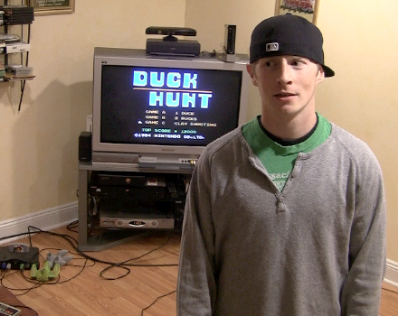
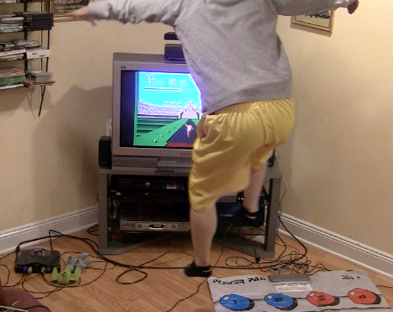

Liquid Layout
When most people think about web design (if they think about web design at all), they often think of it in terms of aesthetic appeal: a well-designed site is one that looks good to the eye and feels good to navigate. (Unfortunately the senses of smell and taste don't come into play for websites. Although IGN should start looking in to that. Perhaps I can head up that team this summer. Imagine scratch-n-sniff sites!? I can!). Whether it's the sexy curves of a PS3 or 360 controller (think I need a girlfriend) or the texture of their thumb sticks, the aesthetic dimension of product design is a sure attention-getter.
For any kind of product or service, it's the little things that count. Having a button click when you push it down doesn't seem like much, but when that click makes the difference between killing and getting killed, it matters a great deal (note: it really doesn't). Even if you never realized that the design of that button was causing you trouble, how would you feel about a controller that you were able to use successfully only part of the time? How would you feel about Sony or Microsoft? Would you buy another product from them in the future? Probably not. Thus, for the want of a button that works, a customer is lost.. But wait.. It's Call of Duty, they will be back tomorrow!
Point being that user experience plays a huge role in the success or demise of a product or site and the backbone of said UX lies in the layout. Liquid layouts are layouts that are based on percentages of the current browser window's size. They flex with the size of the window, even if the viewer changes their browser size as they're viewing the site (go ahead and try it right now). Liquid width layouts allow a very efficient use of the space provided by any given Web browser window or screen resolution. The more people who can cleanly and efficiently view your site the better. This liquid site I created is based on the 960 grid system framework as well which is set to be a maximum of 960px. This layout can be viewed perfectly on the most common screen resolution 1024x768. Add that to the fact that I'm running a liquid layout and you have a match made in Hyrule!
Ping Pong
I was never really great at the "guess the jelly beans" game back in grade school. I always seemed to overshoot by a mile. Maybe thats a sign of an upbeat and optimistic person.. Or perhaps its just simply a sign of someone who has no idea how to guess jelly beans. Being this question seems like a cognitive ability test and open to interpretation I should probably go with the former, but lets be honest. Your guess is as good as mine as they say. When it comes to guessing ping pong balls in a school bus the stage just got a little bigger. I may be older and wiser (questionable) now, but despite the pressure of brighter lights the premise remains the same. Just guess. To be honest, the instinct is there to search google for the answer. I can guarantee some people who submitted this application did just that. I guess these are the times we live in. You can find the answer to just about any question on the web. Then again, I'd probably wind up finding the number of ping pong balls you can fit anywhere but a school bus! I remember back in the day, watching the kids who studied the giant glass bowl intensely, trying to count every last jelly bean. Thats was never really my style, I played it cool (relatively) and threw a number out. Plus, they always wound up being the furthest off anyway. If there is one thing I have learned since my jelly bean days, its you cant sweat the small things. I can even apply that very motto to this question. If I spend too much time worrying about ping pong balls, I may lose sight of the things that are really important to portray like my coding and designing skills or my personality. So Just as I did when I was a kid I'll go with my gut and throw out a number.. 51812. Then again, my gut is also very hungry!
Images
440px wide
344px wide
Both images are now 420px wide
Both images are now 300px wide

440px wide
344px wide
Both images are now 420px wide
Both images are now 300px wide
